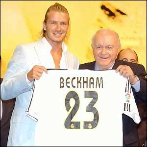
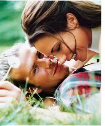

Chương Mười Bốn

uối thập niên 1950, đầu 60, Real Madrid sở hữu một đội hình trong mơ, với những danh thủ thượng hạng đến từ khắp nơi trên thế giới: Di Stefano (Argentina), Puskas (Hungary), Kopa (Pháp), Didi (Brazil), Santamaria (Uruguay), Gento (TBN)…Bước vào thiên niên kỷ mới, chủ tịch Florentino Perez nuôi ước mơ tái lập giải ngân hà ngày xưa. Ông liên tục phá vỡ kỷ lục trên thị trường chuyển nhượng để mua về những siêu sao hàng đầu như Luis Figo, Zinedine Zidane, và Ronaldo. Dĩ nhiên, ngân hà chẳng phải ngân hà khi thiếu đi vì sao sáng nhất, nên Perez quyết tâm theo đuổi bằng được David Beckham. Hơn nữa, do Beckham được hâm mộ vô cùng cuồng nhiệt ở Nhật Bản, Trung Hoa, và các nước Đông Nam Á, có được anh tức là nắm chìa khóa xâm nhập Viễn Đông, một thị trường béo bở với hơn 1.5 tỷ người. Theo một số nguồn tin, trong vụ chuyển nhượng Beckham, Perez còn được sự hậu thuẫn của đại gia giày dép và trang phục thể thao Adidas. Nên nhớ, Adidas là nhà tài trợ cho Real Madrid và cá nhân Beckham, trong khi Manchester United lại nhận tài trợ từ Nike.
Ngày David đến Madrid khám sức khỏe, Real thuê riêng chuyên cơ chở anh sang TBN. Vừa đến nơi, anh được cảnh sát dàn hàng hộ tống, đưa tới bệnh viện Zarzuela. Bên ngoài bệnh viện, người hâm mộ và phóng viên đã rồng rắn đợi sẵn. Các nhà báo chạy cả vào trong, “móc ngoặc” với bệnh nhân, dặn dò họ hễ thấy động tĩnh gì của Beckham là phải truyền tin ra ngay. Bác sỹ, y tá, bệnh nhân, ai cũng náo nức. Nhiều người- bệnh-còn- khỏe rời giường, ra đứng canh bên cửa sổ, tay lăm lăm máy chụp hình. Tất cả những cảnh ấy được các đài TBN truyền hình trực tiếp. Sau buổi khám 90 phút, kết quả đều tốt, David và tùy tùng di chuyển về khách sạn.
Ở Real, số 7 đã thuộc về “đại công thần” Raul Gonzalez, không ngôi sao nào, dù lớn đến đâu, có thể giành được nó. Thay vào đó, David chọn 23, số áo gắn liền với huyền thoại bóng rổ Michael Jordan. Áo số 23 mang tên Beckham được bán với giá 60 bảng, song vừa ra mắt tại cửa hàng đồ lưu niệm SVĐ Bernabeu đã bán hết veo 200 chiếc chỉ trong một giờ. Chín tháng đầu tiên David chơi cho Real, CLB bán được một triệu áo, thu về gấp 2.5 lần số tiền họ bỏ ra để mua anh.
Ngày David chính thức ra mắt người hâm mộ Madrid, 5 000 khán giả ngồi chật kín sân bóng rổ Raimundo Saiporta để đón chào thần tượng. Cả ngàn người khác không có vé phải chen chúc bên ngoài. Cùng hội tụ có 520 phóng viên đến từ 25 quốc gia trên khắp năm châu. Toàn bộ buổi lễ được truyền hình trực tiếp không chỉ tại TBN, mà còn trên sóng truyền hình Anh, Pháp, Nhật, Mỹ, Đức, BĐN, và Chile. Chủ tịch Perez mở màn chương trình với bài diễn văn, tuyên bố: “David Beckham xuất thân từ Nhà Hát Những Giấc Mơ, và nay, anh gia nhập đội bóng trong mơ.” Tiếp theo, chủ tịch danh dự Real, huyền thoại Alfredo Di Stefano, đích tay trao chiếc áo số 23 cho David.
Song le, giây phút cảm động nhất buổi lễ chỉ đến khi em nhỏ 10 tuổi Alfonso Lopez luồn qua hàng rào an ninh, chạy vào ôm choàng lấy Beckham. Đội ngũ cảnh vệ bất ngờ, sửng sốt, chưa kịp bắt Lopez lại thì David đã bế bổng em lên, rồi choàng vào người em chiếc áo đấu trắng tinh. Lopez còn bé quá, áo mặc dài đến tận gối. Em cứ đứng nhìn David, nước mắt chảy dài vì hạnh phúc. Bốn bề khán đài, những tràng vỗ tay nổi lên như sấm dội…

Beckham nhận áo từ tay huyền thoại Di Stefano (Ảnh: BBC)
Đến Madrid, David được cấp một chiếc Audi chống đạn, với hệ thống điều khiển bằng giọng nói và bộ cảm ứng hồng ngoại. Tuy nhiên, CLB chỉ cấp xe chứ không cấp nhà. Trong những tháng đầu, David sống một mình ở khách sạn năm sao Santo Mauro. Victoria và hai con vẫn ở lại Anh, chỉ thỉnh thoảng mới sang TBN. Khách sạn thì tiện nghi thật, nhưng không có sự riêng tư, chỉ cần bước ra khỏi cửa phòng là lập tức bị vây quanh. Vậy nên, David phải tích cực đi tìm nhà.
Khổ nỗi, chỉ việc tìm nhà cũng kéo dài tới 3 – 4 tháng. Nhà David ưng thì Victoria chê là nhỏ, không đủ riêng tư, nhà hai vợ chồng cùng chịu thì bị CLB phủ quyết, cho rằng chỗ đó quá xa, quá vắng, dễ bị kẻ xấu đột nhập bắt cóc. Nhùng nhằng mãi, ba bên mới cùng chấm biệt thự Las Encinas. Biệt thự này có đủ hồ bơi và sân quần vợt, nằm trong khuôn viên rộng đến gần hai héc ta, có hai lớp hàng rào bảo vệ, từ cổng vào đến nhà lại phải lái xe hằng hai dặm đường, nên không sợ paparazzi. Đây là biệt thự riêng, không cho bán cũng không cho thuê, song khi David ngỏ lời muốn thuê với cái giá ngất ngưởng 32 000 bảng/ tháng, vợ chồng gia chủ liền dọn sang một căn nhà nhỏ hơn, nhường nhà lại cho anh.
Tại Manchester, Beckham chủ yếu bị phóng viên Anh theo đuổi. Sang đến Madrid, tình hình tệ hơn, vì phóng viên TBN và Anh cùng đeo bám David. Tại sao có phóng viên Anh? Là vì các tờ lá cải xứ sương mù tờ nào cũng cử đặc phái viên đến thường trú ở TBN để đưa tin về Beckham. Mỗi lần Beckham ra khỏi nhà, y như rằng hai chục chiếc xe chở đầy nhà báo chạy theo “hộ tống”. Muốn trốn nhà báo, có khi vợ chồng David phải thuê người đóng giả lên xe chạy trước, còn mình xuất phát sau. Vệ sỹ của David và đám paparazzi nhiều khi suýt đánh lộn. Cho rằng đội vệ sỹ của mình toàn người Anh, không giao tiếp được với paparazzi chủ nhà, nên dễ hiểu lầm, gây sự với nhau, David phải thuê thêm đội vệ sỹ nói tiếng TBN, cầm đầu bởi Delfin Fernandez, một cựu điệp viên từng nhiều năm làm việc dưới trướng lãnh tụ Cuba Fidel Castro. Hiệu quả chưa thấy đâu, đã thấy 2 đội vệ sỹ kèn cựa, khiến David phải nhanh chóng tống khứ Fernandez, một việc làm gây nhiều di hại về sau.
Một vấn đề được các nhà báo xoáy sâu khai thác là việc Victoria không chịu đưa con sang sống ở TBN. Lúc trước chưa có nhà, chưa sang thì còn hiểu được, giờ đã thuê nhà rồi, sao hai vợ chồng vẫn hai nơi? Trong một tháng, số ngày Victoria ở Madrid chỉ đếm được trên đầu ngón tay, mà trong những ngày đó, người ta thấy cô chủ yếu đi…shopping. Có lẽ buồn vì xa vợ, David đi chơi nhiều, đôi lúc tiệc tùng thâu đêm với Roberto Carlos và Ronaldo. Và đùng một cái, xảy ra vụ Rebecca Loos.
Rebecca Loos là trợ lý của David, trông cũng khá hấp dẫn. Victoria tự tin để một cô nàng hơ hớ làm trợ lý cho chồng trong lúc mình ở xa, vì cô nghĩ Loos là người đồng tính nữ. Sự thật, Loos chẳng phải đồng tính nữ, mà là…đa hệ hi-fi. Tháng 4, 2004, tờ lá cải News of the World[1] trả Loos 350 000 bảng cho một cuộc phỏng vấn, trong đó cô nàng tiết lộ bí mật động trời: Đã từng ngủ với Beckham. News of the World còn đăng tải một số tin nhắn gợi tình được cho là của David gửi đến Loos.
Theo sau Loos, nhảy ra hàng loạt cô nàng theo đóm ăn tàn. Cựu…gái điếm Sarah Marbeck kể mình cặp kè Beckham suốt hai năm trời từ 2001 đến 2003. Celina Laurie tuyên bố mình lên giường cùng Becks năm 2002. Gái tiệc tùng Nuria Bermudez từng khoe mình đã ngủ với cả chục cầu thủ Real Madrid, nay khẳng định trong chục đó có David. Rồi thì siêu mẫu Esther Canadas và ca sỹ Rebecca Pous bị đồn có quan hệ tình cảm với thủ quân đội tuyển Anh. Đến cả một “bà bà” 50 tuổi, Ana Obregon, cũng lên tiếng, bảo DB07 thích mình. Sau một đêm, cứ như cả thành Madrid đều là người tình của Beckham!
Ngoại trừ vụ Rebecca Loos, tất cả những lời đồn và cáo buộc kể trên đều không có cơ sở và nhanh chóng bị lãng quên. Vụ Loos hơi đáng tin, vì có lời xác nhận của Delfin Fernandez, kèm theo các tin nhắn làm chứng. Tuy vậy, tin nhắn có thể làm giả, còn Fernandez có thể chỉ cay cú bịa chuyện sau khi bị Beckham sa thải. Một nguồn tin cho rằng Rebecca Loos chỉ là con rối trong tay News of the World, chính News of the World đã cho tiền Loos để tạo nên xì căng đan. Quan hệ giữa Beckham và Loos là thật hay dối, đến nay vẫn trong nghi vấn, không ai có thể khẳng định.
Giữa cơn sóng gió, David và Victoria ứng phó tuyệt khéo. Một mặt, cặp đôi lên tiếng phủ nhận tất cả cáo buộc, mặt khác tiến hành chiến dịch “phản công”. Phản công bằng cách nào? Kiện báo chí tội bôi nhọ đời tư, kiện Rebecca Loos tội vu cáo ư? Chả dại! Kéo nhau ra tòa chỉ tổ to chuyện thêm, lợi bất cập hại, chẳng bằng lấy gậy ông đập lưng ông, lợi dụng chính báo chí để tuyên truyền cho mình.
Thường ngày, vợ chồng Beckham tìm mọi cách tránh né paparazzi, giờ thì họ mở toang cửa như mời paparazzi vào: Cứ đi theo, cứ chụp hình thoải mái các bạn nhé, vệ sỹ không làm khó nữa đâu! Chỉ hai ngày sau bài phỏng vấn Rebecca Loos trên News of the World, hình ảnh David đi trượt tuyết ở Pháp, vui vẻ cõng Victoria trên lưng, xuất hiện trên nhật báo The Sun. Suốt mấy tuần liền, không ngày nào không có hình David và Victoria trên báo, hết tay trong tay, cười rạng rỡ dẫn con đi chơi, thì ôm nhau, hôn nhau say đắm. Sinh nhật Victoria, David bỏ hẳn một triệu bảng mua tặng vợ chiếc nhẫn kim cương hồng.
Màn PR khéo léo của hai vợ chồng đã chuyển hướng dư luận một cách ngoạn mục. Những lời cáo buộc ngoại tình, phản bội, những chuyện đồn thổi Victoria nổi điên, đòi ly dị chồng đều không có bằng chứng gì vững chắc, còn hình ảnh Posh-Becks âu yếm thì đầy rẫy trên mặt báo, rành rành giấy trắng mực đen. Rõ ràng nhìn thấy tận mắt vẫn đáng tin hơn chỉ nghe lời nói: Vợ chồng họ hạnh phúc thế kia, thì mấy chuyện lăng nhăng, bồ bịch đích thị là giả rồi. Cho dù họ có đóng kịch đi nữa thì cũng phải yêu nhau lắm mới đóng kịch được như thế. (Thử bảo bà vợ Tiger Woods đóng kịch âu yếm sau khi nghe tin chồng ngoại tình đi. Bà ấy có đóng được không, hay là đùng đùng cầm gậy rượt, đến nỗi chồng phải bỏ chạy, đâm xe vào gốc cây!) Một nguồn dư luận khác thì tỏ ra thông cảm với Beckham, lý luận rằng dẫu anh có lỗi, lỗi đó vẫn đáng được tha thứ, bởi Victoria cũng phải chịu trách nhiệm một phần. Ai đời lại cứ đi Anh, đi Mỹ, bỏ chồng một mình ở TBN.
Tóm lại, scandal ngoại tình tuy gây phiền toái, nhưng không làm sụp đổ hình tượng người chồng, người cha mẫu mực của Beckham. Bất chấp những cáo buộc, David vẫn ký được hợp đồng quảng cáo thời hạn ba năm với hãng dao cạo Gillette, mỗi năm nhận 2.5 triệu bảng. Nên biết Gillette có quy tắc đạo đức rất nghiêm cẩn, chỉ tài trợ cho những ai họ cho là “sạch sẽ”, không tỳ vết. Năm 2010, khi lộ ra bằng chứng không thể chối cãi rằng Tiger Woods “ăn vụng” khắp nơi, Gillette đã lập tức cắt hợp đồng với golf thủ lừng danh này.
Xì căng đan kết thúc, cũng là lúc Victoria đưa con sang sống cùng chồng. Có người nói Posh vốn không thích TBN, nên cứ ở lỳ tại Anh, giờ bị một phen hú vía suýt mất chồng, mới phải qua Madrid để quản David. Song theo lời chính David, vợ chồng anh đã quyết định từ đầu sẽ xa nhau một thời gian, vì muốn tốt cho Brooklyn và Romeo, tránh cho các con bị báo chí soi mói. David vừa đến Real, tất sẽ gây nên cơn sốt. Cứ để thời gian trôi qua, mấy tháng đến một năm, khi cơn sốt đã giảm nhiệt, người hâm mộ và báo giới TBN đã quen với sự có mặt của Beckham, lúc đó Victoria mới đem con qua thì sẽ tiện hơn.
Năm 2005, Posh và Becks quyết định không ở thuê nữa, mà mua hẳn một căn biệt thự giá 4 triệu bảng tại La Moraleja. Được Victoria đặt cho cái tên Casa Beckham, biệt thự có hồ bơi, sân quần, và cả một sân bóng đá nho nhỏ. CĐV Madrid thở phào: Rốt cuộc cũng mua nhà. Vậy là ít nhất anh ấy sẽ ở đây đến hết hợp đồng bốn năm, chứ không “ăn non”, ra đi sau chỉ một – hai mùa.

David và Victoria trên tạp chí Vogue (Ảnh: Vogue)
Chú thích:
[1] Đã bị đóng cửa năm 2011, sau xì căng đan nghe lén điện thoại di động.